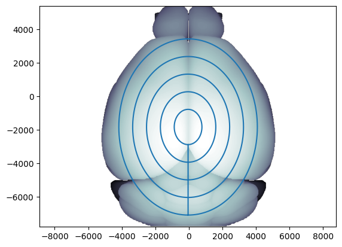
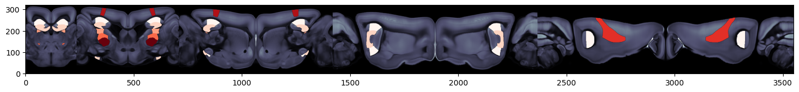
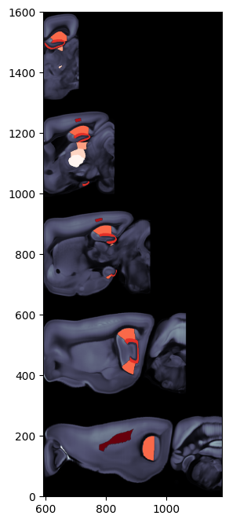

Plotting brain region values on circular flatmap
This example walks through various ways to overlay brain region values on a circular flatmap
The circular flatmap
The circular flatmap is obtained by sampling the volume using concentric circles through the brain.
[1]:
from ibllib.atlas import FlatMap
flmap_cr = FlatMap(flatmap='circles')
/home/runner/work/iblenv/ibllib-repo/ibllib/atlas/regions.py:439: RuntimeWarning: invalid value encountered in cast
level=df_regions.depth.to_numpy().astype(np.uint16),
/home/runner/work/iblenv/ibllib-repo/ibllib/atlas/regions.py:441: RuntimeWarning: invalid value encountered in cast
order=df_regions.graph_order.to_numpy().astype(np.uint16))
[2]:
# Display the concentric circles used in flatmap
ax = flmap_cr.plot_top(volume='image')
ax.plot(flmap_cr.ml_scale * 1e6, flmap_cr.ap_scale * 1e6)
/home/runner/work/iblenv/ibllib-repo/ibllib/atlas/atlas.py:94: RuntimeWarning: invalid value encountered in cast
ii = np.array(np.round(i)).astype(int)
Out[2]:
[<matplotlib.lines.Line2D at 0x7f9f25e96160>]

This results in a flatmap that can be displayed in the following way
[3]:
import matplotlib.pyplot as plt
fig, ax = plt.subplots(figsize=(18,4))
flmap_cr.plot_flatmap(ax)
Out[3]:
<Axes: >
It is also possible to display this flatmap such that each circle is stacked on top of eachother. For this, the pyramid flatmap should be used
[4]:
# Instantiate flatmap with circles arranged vetically on top of eachother
flmap_py = FlatMap(flatmap='pyramid')
/home/runner/work/iblenv/ibllib-repo/ibllib/atlas/regions.py:439: RuntimeWarning: invalid value encountered in cast
level=df_regions.depth.to_numpy().astype(np.uint16),
/home/runner/work/iblenv/ibllib-repo/ibllib/atlas/regions.py:441: RuntimeWarning: invalid value encountered in cast
order=df_regions.graph_order.to_numpy().astype(np.uint16))
[5]:
fig, ax = plt.subplots(figsize=(8, 8))
flmap_py.plot_flatmap(ax=ax)
Out[5]:
<Axes: >
Data preparation
In order to plot brain regions values on the flatmap an array of acronyms and an array of values corresponding to each acronym must be provided. A detailed overview of how to prepare your data can be found here
[6]:
import numpy as np
# prepare array of acronyms
acronyms = np.array(['VPM', 'PO', 'LP', 'CA1', 'DG-mo', 'VISa5', 'SSs5'])
# assign data to each acronym
values = np.arange(acronyms.size)
[7]:
from ibllib.atlas.regions import BrainRegions
br = BrainRegions()
# prepare array of acronyms with beryl mapping
acronyms_beryl = np.unique(br.acronym2acronym(acronyms, mapping='Beryl'))
values_beryl = np.arange(acronyms_beryl.size)
/home/runner/work/iblenv/ibllib-repo/ibllib/atlas/regions.py:439: RuntimeWarning: invalid value encountered in cast
level=df_regions.depth.to_numpy().astype(np.uint16),
/home/runner/work/iblenv/ibllib-repo/ibllib/atlas/regions.py:441: RuntimeWarning: invalid value encountered in cast
order=df_regions.graph_order.to_numpy().astype(np.uint16))
[8]:
# prepare different values for left and right hemipshere for Beryl acronyms
values_beryl_lh = np.random.randint(0, 10, acronyms_beryl.size)
values_beryl_rh = np.random.randint(0, 10, acronyms_beryl.size)
values_beryl_lr = np.c_[values_beryl_lh, values_beryl_rh]
Examples
[9]:
from ibllib.atlas.plots import plot_scalar_on_flatmap
# Plot region values on the left hemisphere of circle flatmap overlaid on brain region boundaries using Allen mapping
fig, ax = plt.subplots(figsize=(18,4))
fig, ax = plot_scalar_on_flatmap(acronyms, values, hemisphere='left', mapping='Allen', flmap_atlas=flmap_cr, ax=ax)
/home/runner/work/iblenv/ibllib-repo/ibllib/atlas/plots.py:343: MatplotlibDeprecationWarning: The get_cmap function was deprecated in Matplotlib 3.7 and will be removed two minor releases later. Use ``matplotlib.colormaps[name]`` or ``matplotlib.colormaps.get_cmap(obj)`` instead.
cmap_bound = matplotlib.cm.get_cmap("bone_r").copy()

[10]:
# Plot region values on the both hemispheres of circle flatmap overlaid on the dwi Allen image using Beryl mapping
fig, ax = plt.subplots(figsize=(18,4))
fig, ax = plot_scalar_on_flatmap(acronyms_beryl, values_beryl, hemisphere='both', mapping='Beryl', background='image',
cmap='Reds', flmap_atlas=flmap_cr, ax=ax)

[11]:
# Plot region values on the right hemisphere of pyramidal flatmap overlaid on the dwi Allen image using Allen mapping
fig, ax = plt.subplots(figsize=(8,8))
fig, ax = plot_scalar_on_flatmap(acronyms, values, hemisphere='right', mapping='Allen', background='image',
cmap='Reds', flmap_atlas=flmap_py, ax=ax)

[12]:
# Plot two column region values on the both hemispheres of pyramidal flatmap overlaid on brain region boundaries
# using Beryl mapping
fig, ax = plt.subplots(figsize=(8,8))
fig, ax = plot_scalar_on_flatmap(acronyms_beryl, values_beryl_lr, hemisphere='both', mapping='Beryl',
background='boundary', cmap='Blues', flmap_atlas=flmap_py, ax=ax)
/home/runner/work/iblenv/ibllib-repo/ibllib/atlas/plots.py:343: MatplotlibDeprecationWarning: The get_cmap function was deprecated in Matplotlib 3.7 and will be removed two minor releases later. Use ``matplotlib.colormaps[name]`` or ``matplotlib.colormaps.get_cmap(obj)`` instead.
cmap_bound = matplotlib.cm.get_cmap("bone_r").copy()